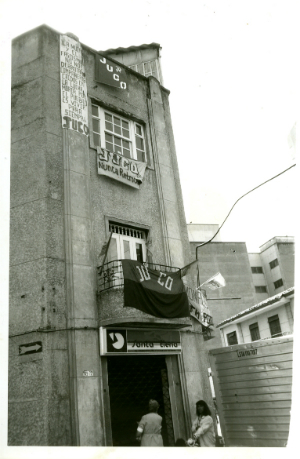

Casa JUCO
Fachada Casa de la JUCO días después de los hechos
A 29 años de la infamia
Ubicada en la calle Barbacoas y con apenas un poco más de un año de fundada, el 24 de abril de 1987, seis militantes de las Juventudes Comunistas fueron asesinados en su interior en hechos que nunca se esclarecieron y quedaron en la total impunidad. La masacre fue perpetrada en momentos en que los policías que protegían las instalaciones salieron sospechosamente a “tomar un tinto”, instante en el que tres hombres asaltaron las instalaciones de la casa, y con armas cortas y largas cegaron la vida de los seis militantes de la Juventud, los hechos ocurren en medio de un contexto de eliminación de sus cuadros y militantes (que en el mes de noviembre sumaban 60 asesinados de la JUCO y más de 500 asesinados pertenecientes a la UP) y después de mes y medio del asesinato del candidato de la UP a la presidencia Jaime Pardo Leal. Hablamos con Gabriela Gil, comunicadora y periodista y Alejandro Cometa, miembro del Partido Comunista sobre la importancia de este lugar para la ciudad y para su memoria colectiva e histórica.